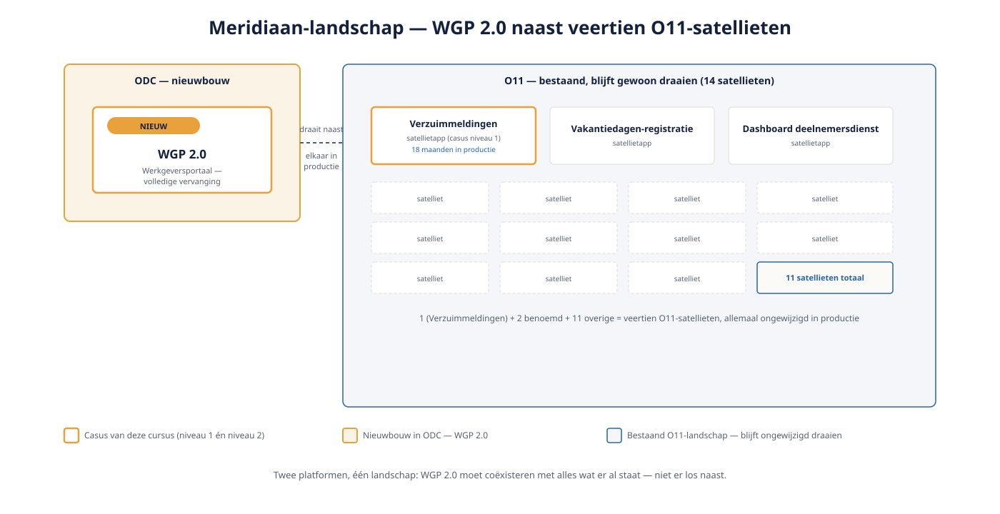
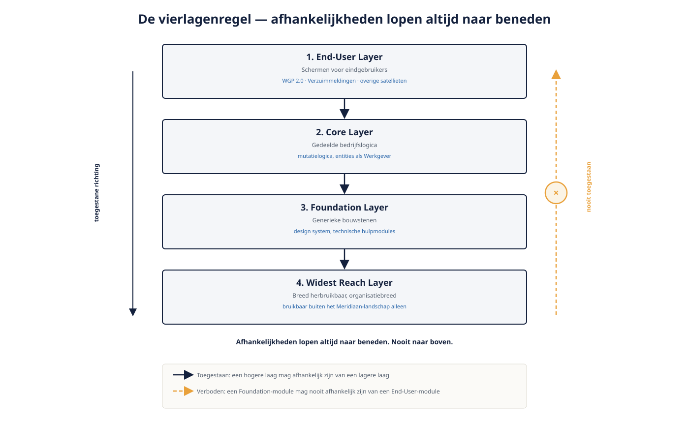

Deel 11 — Architecture Canvas en de vierlagenregel
Reader · Ductus-cursus OutSystems · Niveau 2 — Professional · deel 11 van 30
Casusintroductie niveau 2: WGP 2.0
Achttien maanden na de capstone van niveau 1 is Verzuimmeldingen een stabiele, kleine app gebleken — en precies dat succes heeft ertoe geleid dat Meridiaan nu WGP 2.0 wil bouwen: de volledige vervanging van het zes jaar oude Werkgeversportaal, ditmaal in ODC, terwijl de veertien bestaande O11-satellieten (waaronder Verzuimmeldingen zelf) gewoon in productie blijven draaien. Niveau 2 gaat over wat er verandert zodra je niet één kleine app bouwt, maar een applicatielandschap moet ontwerpen dat naast een bestaand landschap moet functioneren.

11.1 De Architecture Canvas: van app naar landschap
De Architecture Canvas is OutSystems' manier om een heel applicatielandschap in kaart te brengen: welke modules bestaan er, wat is hun rol, en — cruciaal — welke afhankelijkheden lopen ertussen. Voor Meridiaan betekent dit voor het eerst een overzicht waarin WGP 2.0 en de veertien satellieten (inclusief Verzuimmeldingen) samen zichtbaar zijn, met hun onderlinge koppelingen.
Dit is geen documentatie-exercitie achteraf — de Architecture Canvas is een levend hulpmiddel dat je vanaf het begin van WGP 2.0 raadpleegt om te bepalen: hoort een nieuw stuk functionaliteit in een bestaande module, of in een nieuwe?
11.2 De vierlagenregel
OutSystems onderscheidt vier architectuurlagen, elk met een eigen verantwoordelijkheid en een strikte regel over de richting van afhankelijkheden:
- End-User layer — de schermen die eindgebruikers zien (bijvoorbeeld WGP 2.0 zelf)
- Core layer — herbruikbare bedrijfslogica en -entiteiten die door meerdere End-User-modules gedeeld worden
- Foundation layer — basisbouwstenen: generieke widgets, hulpfuncties, integratiepatronen
- Widest Reach layer — de meest fundamentele, breed herbruikbare bouwstenen (bijvoorbeeld een organisatiebrede huisstijl-library)
De regel: afhankelijkheden lopen altijd van hoog naar laag, nooit andersom. Een Foundation-module mag nooit afhankelijk zijn van een End-User-module. Voor WGP 2.0 betekent dit een concrete ontwerpvraag: de mutatielogica die Verzuimmeldingen en WGP 2.0 straks allebei nodig hebben, hoort niet in een van beide End-User-apps, maar in een gedeelde Core-module waar beide van afhankelijk zijn.

11.3 Spoorsplitsing: de Canvas in O11 versus ODC
Het concept van vier lagen is platformonafhankelijk — het is een architectuurprincipe, geen platformfunctie. Het verschil zit in hoe zichtbaar en afdwingbaar de laagindeling is:
O11: de Architecture Canvas is een expliciete, visuele tool binnen Service Studio/LifeTime waarin je modules handmatig aan een laag toewijst. Afdwinging is grotendeels een kwestie van teamdiscipline en code review — het platform waarschuwt, maar blokkeert een verkeerde-richting-afhankelijkheid niet altijd hard.
ODC: de laagstructuur is dieper geïntegreerd in hoe modules binnen een workspace worden georganiseerd, met sterkere ingebouwde signalering wanneer een afhankelijkheid de verkeerde kant op wijst. Voor Meridiaan betekent dit dat nieuwbouw in ODC eerder een architectuurfout laat zien dan de bestaande O11-satellieten dat deden — een concreet voordeel van de ODC-route, maar geen vervanging voor het denkwerk zelf.
Kernpunten
- De Architecture Canvas brengt een heel applicatielandschap in kaart, inclusief afhankelijkheden tussen modules
- Vier lagen (End-User, Core, Foundation, Widest Reach), met afhankelijkheden die altijd van hoog naar laag lopen
- Gedeelde logica tussen apps hoort in een Core-module, niet gedupliceerd of in een van de End-User-apps
- Het principe is platformonafhankelijk; ODC signaleert verkeerde-richting-afhankelijkheden sterker dan O11